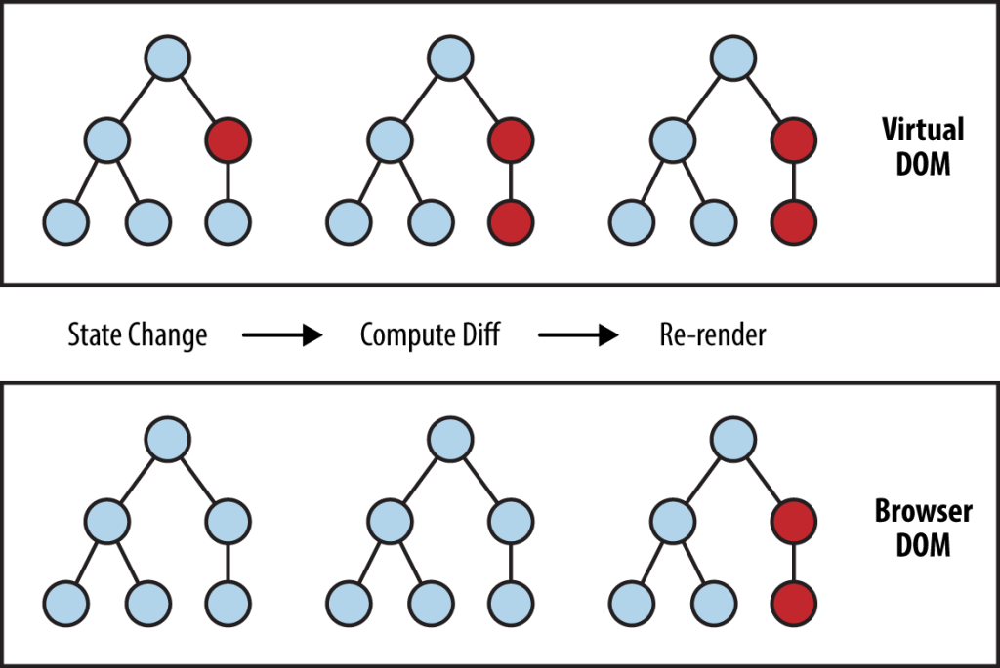

Table of Contents
- React
- React Rerendering
- List and Keys
- HUB Engine
React
- JavaScript library for building dynamic and interactive user interfaces
- Virtual DOM
- Declarative JSX syntax
- One-way data binding
Virtual DOM
- A Virtual DOM is a lightweight copy of the real DOM
- Reconciliation (Diffing Algorithm)

Thinking in React
React Rerendering
- Whenever the state or props of a component change, React re-renders the component
- Whenever the parent component re-renders, all child components re-render
Why React
Re-renders
React Rerender Optimization
- React.memo
- useMemo
- useCallback
List and Keys
- Keys help React identify which items have changed, are added, or are removed
- Do not use index as keys
HUB Engine
- Engine HOC - every component is wrapped with "Engine" as a Higher Order Component
- RenderComponents - is function that takes a layout JSON and returns a React component
Engine
- It will pass all the required props like navigate, location, params, user, app, dispatch
- It will conditionally render the component based 'condition' in json
- 'rerender' prop
- 'reducer' prop
- 'data' and 'props' - From json it will process data and props and pass it to the
component
- 'debug' prop
- 'key' prop used for RenderComponents function
RenderComponents(layout, parentProps)
- It will take layout Array as input and returns JSX
Packages to update
- Eslint
- React 19
- React Router V7